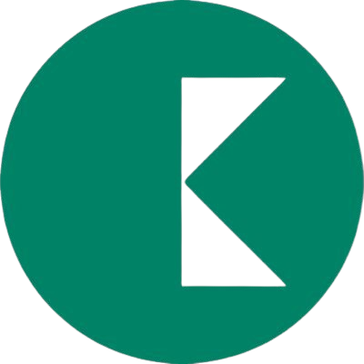
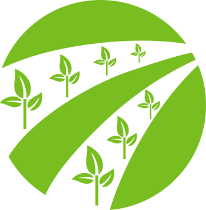
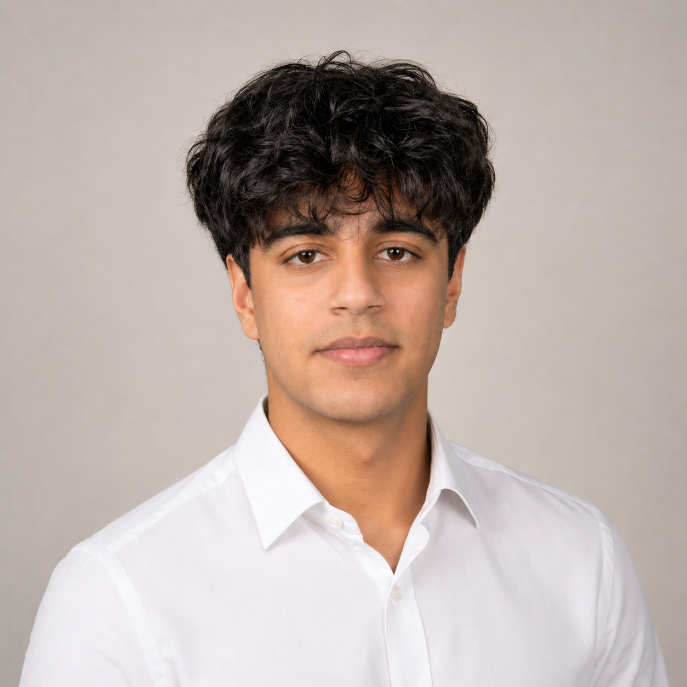

![[Project Name] photo](images/robot_summer.JPG)
Mars Habitat Robot
Fully autonomous robot made completely from scratch! Built with 3 teammates for the annual Engineering Physics robotics competition at UBC.
View full details →
Motor Control Circuit
A closed-loop analog/digital circuit that sets and actively holds a DC motor's RPM, no microcontroller involved.
View full details →
Mechatronics Reliability Engineering Intern — Kruger Products
- Wrote Python scripts to analyze winder stopping behavior across hundreds of parent rolls, using statistical analysis to reposition the shutoff sensor and reduce end-of-roll paper waste by 5%.
- Automated production paper-roll consumption tracking with a derivative-based algorithm that detects roll changeovers from live sensor data, cutting manual tracking time by 90%.
- Analyzed two years of downtime data, maintenance history, operator observations, and equipment records to identify recurring failure causes, converting the findings into 20+ preventative-maintenance work orders in SAP.
- Built a complete Bill of Materials for two production lines by writing Python scripts to parse 1,500+ pages of engineering drawings into a 10,000-part structured BOM for SAP upload.

Navigation & Embedded Systems Sub-Team Member — UBC Agrobot
- Integrated LiDAR and IMU data using FAST-LIO in ROS 2 with Python nodes to generate real-time odometry, 3D maps, and obstacle information for autonomous navigation.
- Implemented UART communication in C++ between an NVIDIA Jetson and STM32 to relay motion commands from the path-planning system to the embedded controller.
- Interfaced the STM32 with dual stepper-motor drivers over SPI to execute steering commands and control robot turning.
Hi! I’m a third-year Engineering Physics student at UBC. My program sits at the intersection of engineering and science, bringing together mechanical, electrical, and software engineering with physics. I’ve come to appreciate that the better I understand the underlying principles behind a system, the easier it is to learn new technologies and tackle unfamiliar real-world problems.
I had the opportunity to apply that mindset during my previous co-op at Kruger Products, where I worked on engineering problems in a large-scale industrial environment. Going forward, I’m especially interested in exploring electronics, embedded systems, and PCB design, and continuing to build projects that bring hardware and software together.
Outside of engineering, I enjoy reading, playing tennis, and unwinding with video games.

Electronics
- PCB Design (KiCad)
- Circuit Analysis
- ESP32 / Raspberry Pi
- Oscilloscope + bench work
- Soldering
Software
- C / C++
- Python
- ROS 2
- Git
Mechanical
- SolidWorks
- Laser cutting
- 3D printing
Lab
- Data acquisition
- Signal processing
- Technical writing